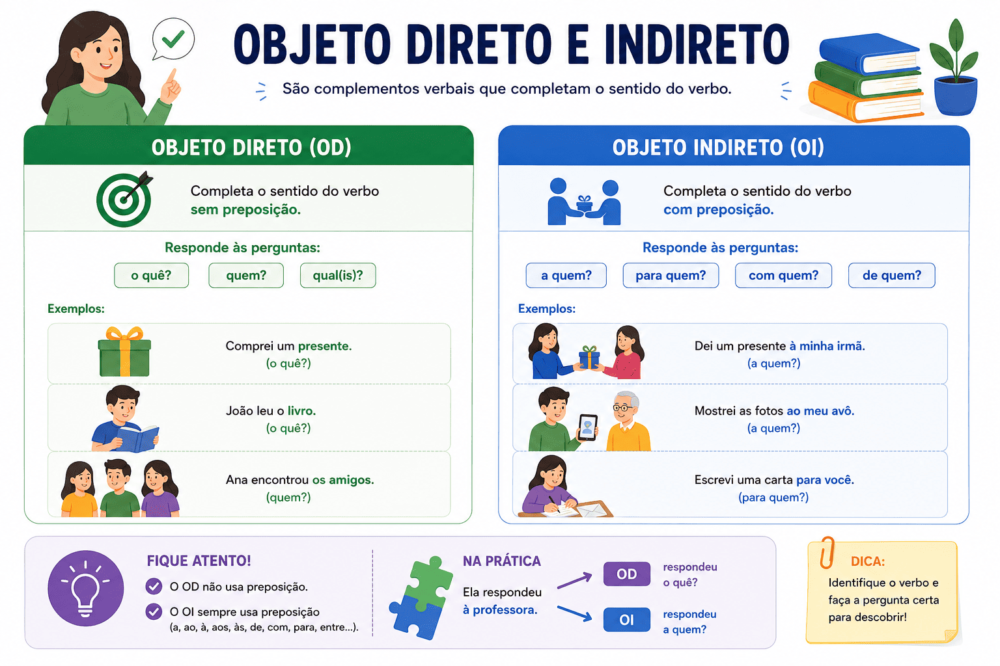

Objeto Direto e Indireto: o que são, diferenças e como identificar
O objeto direto e o objeto indireto são termos integrantes da oração. Eles funcionam como complementos verbais, ou seja, são palavras ou expressões que completam o sentido de verbos que, sozinhos, não conseguem transmitir uma informação completa.
Saber identificar e diferenciar esses complementos é fundamental para a análise sintática e, principalmente, para o uso correto dos pronomes na redação e na resolução de questões de vestibulares tradicionais e do ENEM.

A regra básica dos complementos verbais:
- Objeto Direto: Liga-se ao verbo sem preposição obrigatória.
- Objeto Indireto: Liga-se ao verbo com preposição obrigatória.
A Transitividade Verbal
Para encontrar os objetos na frase, você precisa primeiro olhar para o verbo. Verbos que exigem complemento são chamados de transitivos (a ação "transita" do sujeito para o complemento). Eles se dividem em:
1. Verbo Transitivo Direto (VTD) e o Objeto Direto
O objeto direto completa o sentido de um verbo transitivo direto. A ligação é feita diretamente, sem a exigência de uma preposição. Para identificá-lo, fazemos as perguntas "o quê?" ou "quem?" logo após o verbo.
Exemplo: O aluno comprou os livros.
- O aluno comprou o quê? ➡️ os livros.
- "Os livros" é o objeto direto. (Note que "os" é apenas um artigo, não uma preposição).
2. Verbo Transitivo Indireto (VTI) e o Objeto Indireto
O objeto indireto completa o sentido de um verbo transitivo indireto. A ligação é feita de forma indireta, exigindo obrigatoriamente o uso de uma preposição (de, para, com, em, a, por, etc.). Para identificá-lo, fazemos perguntas acompanhadas de preposição: "de quê?", "para quem?", "em quem?", "a quê?".
Exemplo: A equipe precisa de ajuda.
- A equipe precisa de quê? ➡️ de ajuda.
- "De ajuda" é o objeto indireto (iniciado pela preposição "de").
3. Verbo Transitivo Direto e Indireto (VTDI)
Alguns verbos, chamados de bitransitivos, pedem os dois complementos ao mesmo tempo para que a frase faça sentido: um objeto direto e um objeto indireto.
Exemplo: O diretor entregou o certificado ao aluno.
- Entregou o quê? ➡️ o certificado (Objeto Direto).
- Entregou a quem? ➡️ ao aluno (Objeto Indireto - preposição "a" + artigo "o").
Substituição por Pronomes Oblíquos (O que cai na prova!)
Um dos tópicos mais cobrados em concursos e vestibulares como o PAES UEMA é a substituição dos objetos por pronomes oblíquos átonos. Existe uma regra estrita para o uso formal:
| Pronome | Substitui | Exemplo de aplicação |
|---|---|---|
| o, a, os, as | Apenas Objeto Direto | Encontrei o menino ➡️ Encontrei-o. |
| lhe, lhes | Apenas Objeto Indireto (pessoas) | Entreguei ao menino ➡️ Entreguei-lhe. |
Erro gravíssimo na redação:
Nunca utilize o pronome "lhe" para substituir um objeto direto.
Incorreto: Eu vi o filme e recomendei-lhe aos amigos.
Correto: Eu vi o filme e recomendei-o aos amigos. (Recomendei o quê? O filme = objeto direto).
Casos que exigem atenção (Pegadinhas)
O Objeto Direto Preposicionado
Existem raros casos em que o objeto direto vem acompanhado de preposição, seja por ênfase, clareza ou por força de expressão (como amar a Deus, comer do bolo). Mesmo com a preposição, o verbo continua sendo transitivo direto, e o termo é classificado como objeto direto preposicionado.
Objeto Indireto vs. Complemento Nominal
Não confunda o objeto indireto com o complemento nominal! Ambos têm preposição. A diferença é simples:
- O Objeto Indireto completa o sentido de um verbo. (Ex: Dependemos de recursos).
- O Complemento Nominal completa o sentido de um nome (substantivo abstrato, adjetivo ou advérbio). (Ex: Temos necessidade de recursos).
Quiz — Objeto Direto e Indireto
Resumo sobre Objeto Direto e Indireto
- Objeto Direto: Completa verbos transitivos diretos. Responde às perguntas o quê? e quem?. Não possui preposição (na maioria das vezes). Pode ser substituído pelos pronomes o, a, os, as.
- Objeto Indireto: Completa verbos transitivos indiretos. Responde a perguntas com preposição (de quê? para quem? em quê?). É introduzido por preposição obrigatória. Pode ser substituído pelos pronomes lhe, lhes (para pessoas).
- Verbos Bitransitivos: Exigem os dois objetos (direto e indireto) na mesma oração para terem sentido completo (Ex: Dar, enviar, entregar).
- Diferença crucial: Complementos verbais (objetos) completam VERBOS. Complementos nominais completam NOMES (substantivos, adjetivos, advérbios).
Perguntas frequentes (FAQ)
Um verbo pode mudar de transitividade e mudar seu objeto?
Sim! Dependendo do contexto, o mesmo verbo pode mudar. Exemplo: O verbo assistir. "O médico assistiu o paciente" (VTD - ajudou). "O aluno assistiu ao filme" (VTI - presenciou, exige a preposição "a").
Posso usar "lhe" no lugar do objeto direto?
Não. Na norma-padrão (exigida em vestibulares e redações), o pronome "lhe" substitui exclusivamente o objeto indireto (e em alguns casos funciona como adjunto adnominal de posse). Substitua o objeto direto apenas por "o, a, os, as".
O que é o objeto direto preposicionado?
É um caso de exceção onde o verbo é transitivo direto (não exige preposição por regra gramatical), mas a preposição é inserida por questões de clareza ou estilo, como em "Amai a Deus" ou para evitar ambiguidade.
Conteúdos relacionados e de aprofundamento
Referências bibliográficas
- BECHARA, Evanildo. Moderna Gramática Portuguesa. 39. ed. Rio de Janeiro: Nova Fronteira, 2019.
- CEGALLA, Domingos Paschoal. Novíssima Gramática da Língua Portuguesa. 49. ed. São Paulo: Companhia Editora Nacional, 2020.
- CUNHA, Celso; CINTRA, Lindley. Nova Gramática do Português Contemporâneo. 7. ed. Rio de Janeiro: Lexikon, 2017.
Explore Outros Conteúdos
Continue seus estudos acessando outras seções do site Mestre Kira: